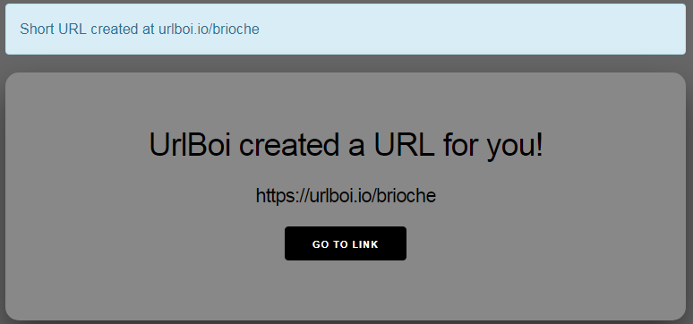
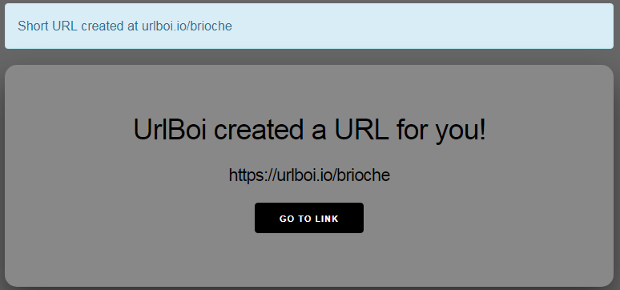
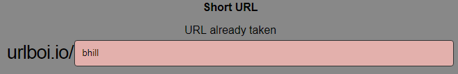
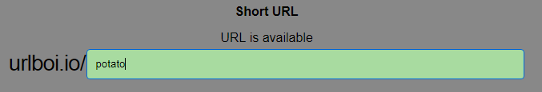

Building a URL Shortener with Phoenix Framework
URL shortening services are fundamentally very simple: Create a map between short paths and long URLs, and upon receiving an HTTP request, take the path from the request and redirect to the mapped URL. To do this, you only need a webserver and a short, memorable domain name. Now, I am not a database, nor am I a website, but good web frameworks can turn you into one relatively easily. I decided to use Elixir’s Phoenix 1.4 as the web framework for my URL shortening project. For the domain name, I chose urlboi.io.
Creating a Phoenix Project
This project being my first hands on experience with a full MVC web framework, I want to make sure I let Phoenix do most of the heavy lifting for me. Before starting, I simply need an instance of Postgres running, node.js/npm installed, and to install the Phoenix Mix archive. With ample mix tasks available, I can start with mix phx.new Urlboi to create the skeleton of a full project. After having the task install all of the dependencies, I run mix ecto.create to have Ecto, Elixir's powerful database wrapper and query generator, automatically create the 'urlboi_dev' database for me without touching Postgres directly.
Building the API
I want to start with a simple REST API to get the bare minimum working. The mix task phx.gen.json generates everything needed for a JSON resource. My data structure only needs a url, a short path, and a number of visits that a shortened url received. I'll run mix phx.gen.json ShortUrls ShortUrl short_urls url:string shortpath:string:unique visits:integer, which generates a 'Context' module named ShortUrls, an Ecto schema named ShortUrl, which is essentially a struct with some Ecto magic underneath, a controller named ShortUrlController for all of my RESTful functionality, a view named 'ShortUrlView' for rendering the JSON data, migration scripts for creating our database table named 'short_urls', and few other files.
~ mix phx.gen.json ShortUrls ShortUrl short_urls url:string shortpath:string:unique visits:integer
* creating lib/urlboi_web/controllers/short_url_controller.ex
* creating lib/urlboi_web/views/short_url_view.ex
* creating test/urlboi_web/controllers/short_url_controller_test.exs
* creating lib/urlboi_web/views/changeset_view.ex
* creating lib/urlboi_web/controllers/fallback_controller.ex
* creating lib/urlboi/short_urls/short_url.ex
* creating priv/repo/migrations/20190820203417_create_short_urls.exs
* creating lib/urlboi/short_urls.ex
* injecting lib/urlboi/short_urls.ex
* creating test/urlboi/short_urls_test.exs
* injecting test/urlboi/short_urls_test.exs
Add the resource to your :api scope in lib/urlboi_web/router.ex:
resources "/short_urls", ShortUrlController, except: [:new, :edit]
Remember to update your repository by running migrations:
$ mix ecto.migrate
Wow, after running mix ecto.migrate and adding a route to :api scope, I have a fully functioning API hooked up to a SQL database. In my Router module, I added an api scope exposing the short_urls resources:
scope "/api", UrlboiWeb do pipe_through :api resources "/short_urls", ShortUrlController, except: [:new, :edit] end
In the ShortUrl module, I need to make a couple changes: The 'visits' should default to 0 in the schema definition, and the changeset function needs to be changed so that the 'visits' field isn't required for database actions and the shortpath needs some length and format constraints.
defmodule Urlboi.ShortUrls.ShortUrl do
use Ecto.Schema
import Ecto.Changeset
schema "short_urls" do
field :shortpath, :string
field :url, :string
field :visits, :integer, default: 0
timestamps()
end
@doc false
def changeset(short_url, attrs) do
short_url
|> cast(attrs, [:url, :shortpath, :visits])
|> validate_required([:url, :shortpath])
|> validate_format(:shortpath, ~r|^[0-9a-zA-Z_]*$|)
|> validate_length(:shortpath, min: 3, max: 255, count: :bytes)
|> unique_constraint(:shortpath)
end
end
In the ShortUrlView module, I'll change the render functions slightly so that they return only our json object without an extra root key "data."
#------Before------
def render("index.json", %{short_urls: short_urls}) do
%{data: render_many(short_urls, ShortUrlView, "short_url.json")}
end
#------After-------
def render("index.json", %{short_urls: short_urls}) do
render_many(short_urls, ShortUrlView, "short_url.json")
end
Lastly, because I want to query the URL by the short path and not by an arbitrary database integer ID, I'll change the get_short_url!/1 function to query by the unique shortpath index, not id.
#------Before------ def get_short_url!(id), do: Repo.get!(ShortUrl, id) #------After------- def get_short_url!(id), do: Repo.get_by!(ShortUrl, shortpath: id)
Testing the API
Now, we can run the server and test out our API.
POST to http://localhost:4000/api/short_urls
Request Body
{
"short_url": {
"url": "https://brandthill.com",
"shortpath": "bhill"
}
}
Response: 201 Created
Response Body
{
"id": 1,
"url": "https://brandthill.com",
"shortpath": "bhill",
"visits": 0
}
GET at http://localhost:4000/api/short_urls/bhill
Response: 200 OK
Response Body
{
"id": 1,
"url": "https://brandthill.com",
"shortpath": "bhill",
"visits": 0
}
Redirecting Requests
Now to utilize the short URLs, I'll need another controller module. I only need this controller to have one action: to redirect to the long URL when fed an existing short path. I'd also like to increment that 'visits' field I put in the schema. Phoenix controllers already have a redirect helper function, making the redirection easy. My 'RedirectController' module contains only one action named 'index' for the sake of convention.
defmodule UrlboiWeb.RedirectController do
use UrlboiWeb, :controller
alias Urlboi.ShortUrls
def index(conn, %{"shortpath" => shortpath}) do
short_url = ShortUrls.get_short_url!(shortpath)
redirect(conn, external: short_url.url)
ShortUrls.increment_visits(short_url)
end
end
ShortUrls.get_short_url!/1 will raise an error if no url was found, which is expected. I added to the ShortUrls.increment_visits/1 function using some of Ecto's cool query features.
def increment_visits(%ShortUrl{} = short_url) do
from(s in ShortUrl, where: s.id == ^short_url.id, update: [inc: [visits: 1]])
|> Repo.update_all([])
end
Now I'll just add the line get "/:shortpath", RedirectController, :index to the bottom of the "/" scope in the Router module and it should be ready to test. Visiting http://localhost:4000/bhill redirects to https://brandthill.com as expected, and querying the API shows the visits field has been incremented by 1! The core functionality is there, and using Phoenix made it quite simple.
Creating the Frontend
It's time to create a beautiful functional frontend for UrlBoi. I salvaged the default Phoenix templates and assets index.html.eex, app.html.eex, phoenix.css, and app.js, and I created a couple more templates form.html.eex and created.html.eex to render the pre and post short-url creation screens. It's pretty simple as I want the GUI to be used only for creating links, not all the features of the API.
 

Realtime Validation with Phoenix Channels
Phoenix's claim to fame is its concept of "Channels," a full-duplex pub-sub websocket-ey feature that allows for real-time communication between server(s) and client(s), boasting the ability to maintain two million open connections on a single potato thanks to the Erlang VM's efficient processes. Let's use channels for real-time validation for prospective short urls.
The validation will go something like this: As the user types in a shortened url, after they've stopped typing for half a second, send the current short path. When the server receives it, verify that it's of the correct format, correct length, and not already in use, and send a message back. When the user receives the message, update a text field and the text-input color accordingly.
Backend
For the backend, I'll add the line channel "urlpath:*", UrlboiWeb.UrlpathChannel to the UserSocket module to open a channel on the wildcard topic "urlpath:*" handled by the UrlpathChannel module.
defmodule UrlboiWeb.UrlpathChannel do
use Phoenix.Channel
alias Urlboi.ShortUrls
alias Urlboi.ShortUrls.ShortUrl
def join("urlpath:" <> _user, _message, socket) do
{:ok, socket}
end
def handle_in("test_query", %{"shortpath" => shortpath, "url" => url}, socket) do
payload = cond do
String.length(shortpath) < 3 ->
%{msg: "URL too short", available: false}
not Regex.match?(~r|^[0-9a-zA-Z_]*$|, shortpath) ->
%{msg: "URL must be alphanumeric (underscores valid)", available: false}
ShortUrls.get_short_url(shortpath) ->
%{msg: "URL already taken", available: false}
true ->
%{msg: "URL is available", available: true}
end
push(socket, "test_result", payload)
{:noreply, socket}
end
end
Frontend
For the frontend, I'll add to the existing file socket.js, which uses Phoenix's javascript libraries.
import {Socket} from "phoenix"
let socket = new Socket("/socket", {params: {token: window.userToken}})
socket.connect()
// Now that you are connected, you can join channels with a topic:
let random = Math.random().toString(36).substr(2, 5);
let channel = socket.channel(`urlpath:${random}`, {})
let timeout
let short_input = document.getElementById('short_url_shortpath')
let long_input = document.getElementById('short_url_url')
let create_button = document.getElementById('create-btn')
let tooltip = document.getElementById('tooltip')
let onTextInput = (e) => {
clearTimeout(timeout)
timeout = setTimeout(() => channel.push('test_query',
{
shortpath: short_input.value,
url: long_input.value
}), 500)
}
short_input.addEventListener('input', onTextInput, 500)
long_input.addEventListener('input', onTextInput, 500)
channel.on('test_result', payload => {
console.log(payload)
create_button.disabled = !payload.available
tooltip.innerText = payload.msg
short_input.style.backgroundColor = payload.available ? "#a8dba0" : "#e3b0ac"
})
channel.join()
.receive("ok", resp => { console.log("Joined successfully", resp) })
.receive("error", resp => { console.log("Unable to join", resp) })
Testing Realtime Validation
Now, we get real-time validation of our short urls, thanks to Channels.  
Conclusion
This was a great introduction to Phoenix. Using a T H I C C web framework for such a simple task may have been overkill, but powerful mix tasks made it extremely easy to use. When I have some time I'll try to get this thing live at urlboi.io for anyone to use. I'll also try to make it a little prettier. UrlBoi repository can be found here, PRs are welcome.